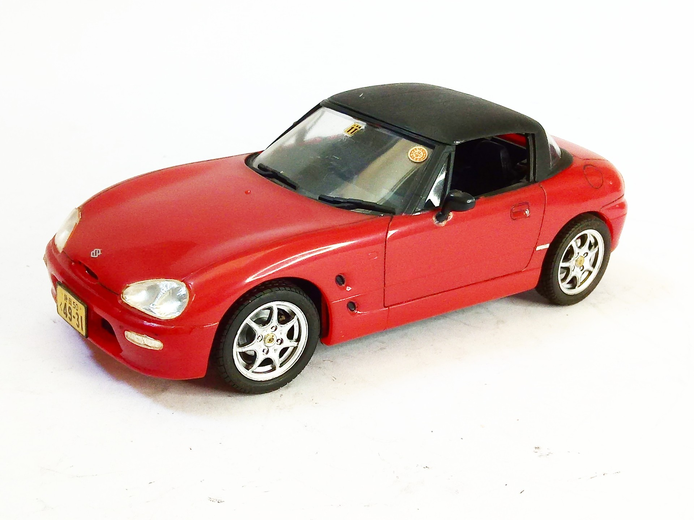
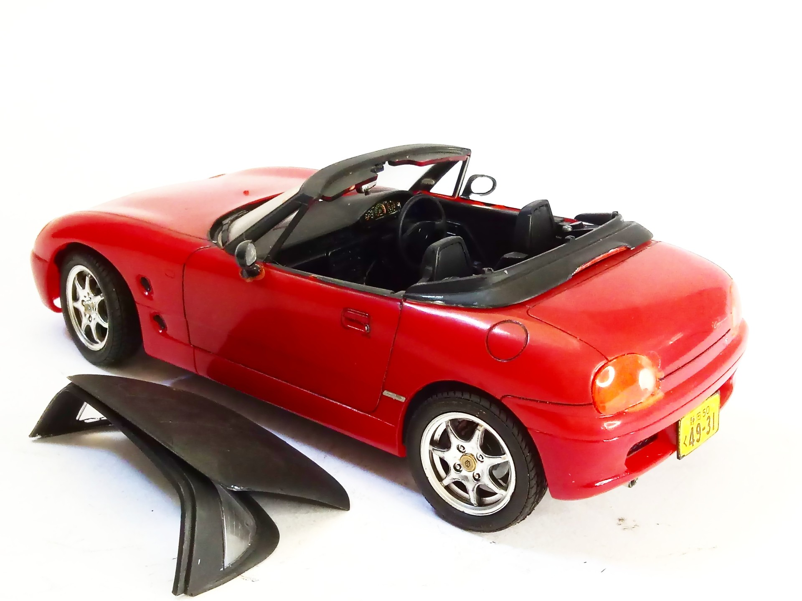
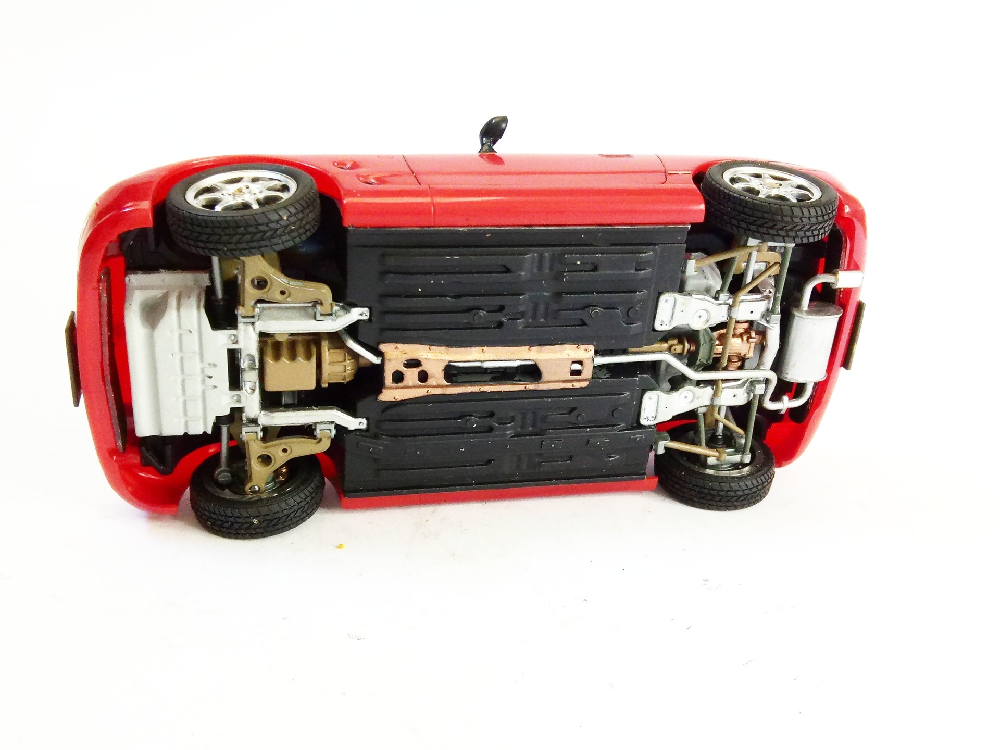

Auto e veicoli stradali · scale model archive
Suzuki Cappuccino
Suzuki Cappuccino — Kit: Aoshima, Scale: 1/24. cute little kit, I like the detaied underside and the option of closed or open version #1/24 #Aoshima

Photo gallery


English description
cute little kit, I like the detaied underside and the option of closed or open version
#1/24 #Aoshima
Descrizione italiana
grazioso piccolo kit, mi piace il detailed parte inferiore e il option di closed or open versione.